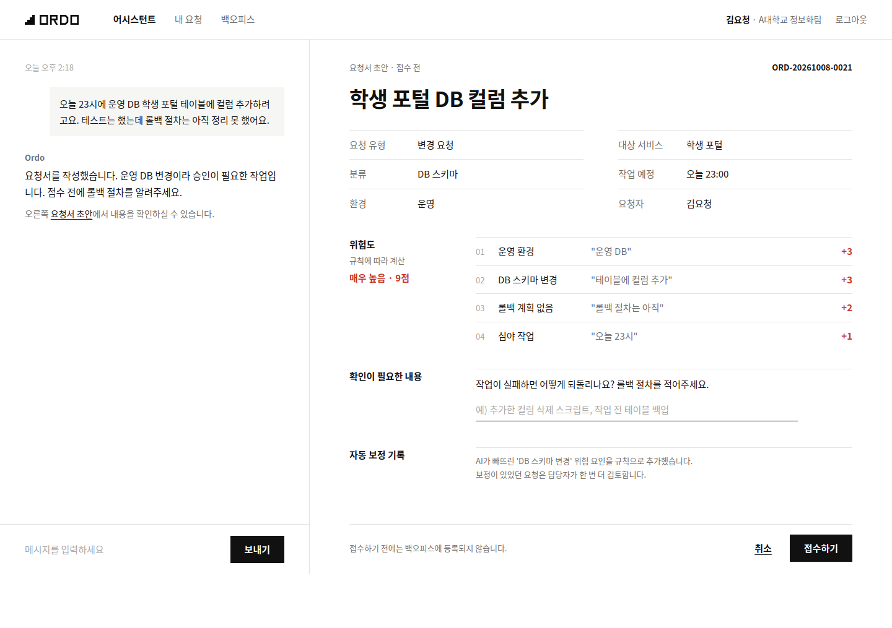

시스원 백오피스용
사내 AI 어시스턴트입니다.
시스원 MSP 본부로 들어오는 운영 요청을 대화로 등록하고, 처리 현황을 확인합니다. 빠진 정보는 먼저 묻고, 위험한 변경은 사람이 확인한 뒤에만 접수합니다.
사용 방법 보기
양식 없이 평소 말하듯 적습니다.
빠진 정보는 먼저 묻습니다.
접수하기를 눌러야 등록됩니다.
대화로 진행 상황을 확인합니다.
분석은 사내 서버의 로컬 AI가 처리합니다. 외부 AI 서비스로 내용을 보내지 않습니다.
AI는 요청서 작성과 조회만 할 수 있고, 승인이나 상태 변경은 할 수 없습니다.